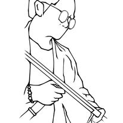

Shoebenz prioritizes comfort above all else, utilizing advanced cushioning and ergonomic design to ensure a luxurious wearing experience from dawn till dusk.
Exceptional Quality: Crafted with the finest materials and rigorous attention to detail, Shoebenz boasts unparalleled quality, promising longevity and durability that surpasses industry standards.
Timeless Style: Shoebenz blends classic elegance with contemporary flair, offering a versatile range of designs suitable for any occasion, whether it be formal gatherings or casual outings.
FORMAL GATHERING
Formal gatherings demand footwear that exudes elegance and sophistication. Whether it's a gala, a wedding, or a corporate event, the choice of shoes speaks volumes about one's style and attention to detail. A pair of sleek, polished leather Oxfords or classic black pumps effortlessly elevate any formal ensemble, adding a touch of refinement to the overall look. With their timeless design and impeccable craftsmanship, these shoes not only complement the attire but also ensure comfort and confidence throughout the event, allowing the wearer to stride with poise and grace. In the world of formal gatherings, the right pair of shoes isn't just an accessory; it's a statement of sartorial finesse.
CASUAL GATHERING
Casual gatherings call for footwear that strikes the perfect balance between comfort and style. Whether it's a weekend brunch with friends, a leisurely stroll in the park, or a laid-back get-together, the right pair of casual shoes sets the tone for relaxed enjoyment. Sneakers, loafers, or canvas shoes in versatile colors and designs offer both functionality and fashion flair, effortlessly complementing jeans, shorts, or casual dresses. Their breathable materials and cushioned soles ensure all-day comfort, while their trendy yet understated aesthetics add a touch of personality to any outfit. In the realm of casual gatherings, comfort meets style, making the choice of footwear a seamless expression of individuality and ease.
Innovative Technology: Incorporating cutting-edge technology, Shoebenz continuously pushes the boundaries of footwear innovation, providing features such as breathability, stability, and support for optimal performance.
Customization Options: With a variety of styles, colors, and customization options available, Shoebenz allows wearers to express their individuality and personal style preferences effortlessly.
Celebrities' Choice: Endorsed and worn by celebrities and fashion icons worldwide, Shoebenz has earned a reputation as the go-to footwear brand for those who demand nothing but the best.
Attention to Detail: From meticulously stitched seams to precision-engineered soles, every aspect of Shoebenz shoes reflects a dedication to excellence and a commitment to craftsmanship.

Summary of ShoeBenz
ShoeBenz, revered as the epitome of footwear excellence, stands as an iconic testament to craftsmanship and innovation. Renowned for its unparalleled comfort, sleek design, and durability, Shoebenz has etched its name in the records of fashion history. From bustling city streets to elite runways, these shoes exude an aura of sophistication and style, captivating the hearts of fashion aficionados worldwide. Meticulously crafted with premium materials and precision engineering, each pair of Shoebenz embodies a seamless fusion of form and function. With every step, wearers are transported into a realm of unparalleled luxury and unparalleled confidence. Indeed, Shoebenz isn't just footwear; it's a symbol of timeless elegance and unmatched quality, leaving an indelible mark on the world of fashion.